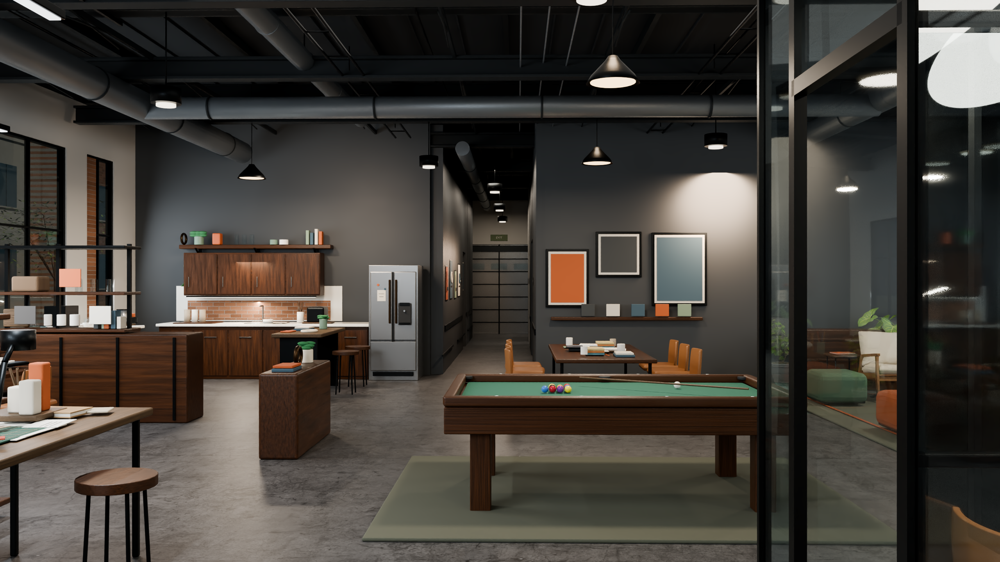
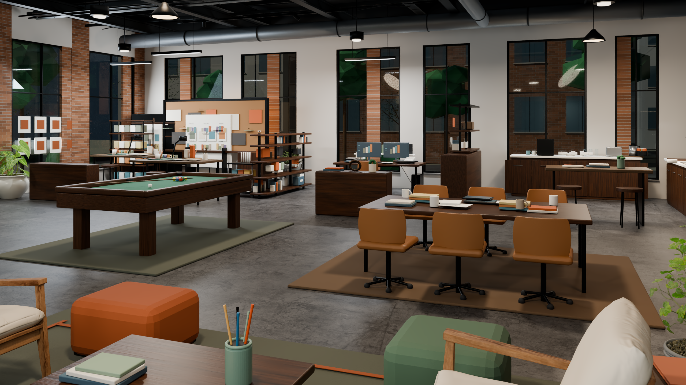
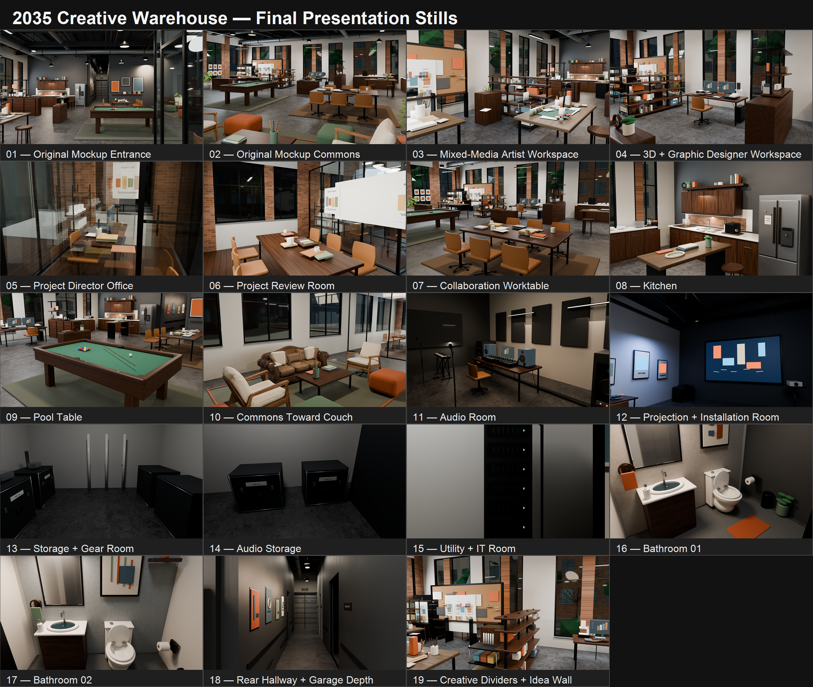

Spatial design · 2035 scenario
2035 Creative
Workspace
This project explores the design of an approximately 4,500–5,000-square-foot industrial warehouse transformed into a flexible creative studio for a five-person interdisciplinary team in 2035.
The concept integrates collaborative spaces, individual workstations, digital design, audio production, and immersive projection environments into a cohesive workspace. Natural lighting, adaptable layouts, and a balance between creative experimentation and focused technical work guide the design.
AI-assisted visualization and iterative spatial development are used to explore how the workspace might support emerging creative practices.
Primary walkthrough
Inside the warehouse
Click play to begin. Native controls provide pause, replay, volume, keyboard control, and fullscreen viewing.
Supporting renderings
Spaces for making together


